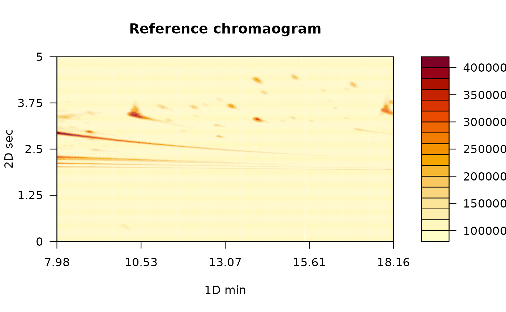

`reference_chrom` makes a reference chromatogram by calculating a statistic of multiple chromatograms.
Arguments
- chromatograms
a joined_chrom object.
- stat
a character with the name of the mathematical function that pixels will be subjected to. By default, (stat = "mean") the new reference chromatogram will be the result of the provided mathematical function.
Details
The aim of this function is to create a consensus chromatogram to be used as a reference in the peak alignment process. In other words, multiple chromatograms will be subjected to a mathematical function, such as min, max, or mean in order to create a representative chromatogram. Then, the new chromatogram will be used as a template and the other chromatograms will be aligned against it. This function overlap pixels with the same chromatogram index and computes a desired mathematical function for each pixel.
Examples
# Read chromatogram 1
GB08_fl <- system.file("extdata", "08GB.cdf", package = "RGCxGC")
MTBLS08 <- read_chrom(GB08_fl, mod_time = 5)
#> Warning: The last 51 signals will be omitted
#> Warning: data length [61051] is not a sub-multiple or multiple of the number of rows [500]
#> Retention time ranges:
#> 1D (min): 7.98 18.16
#> 2D (sec): 0 5
#> Acquisition rate: 100
# Read chromatogram 2
GB09_fl <- system.file("extdata", "09GB.cdf", package = "RGCxGC")
MTBLS09 <- read_chrom(GB09_fl, mod_time = 5)
#> Warning: The last 51 signals will be omitted
#> Warning: data length [61051] is not a sub-multiple or multiple of the number of rows [500]
#> Retention time ranges:
#> 1D (min): 7.98 18.16
#> 2D (sec): 0 5
#> Acquisition rate: 100
# Join chromatograms
joined <- join_chromatograms(MTBLS08, MTBLS09)
reference <- reference_chrom(joined, stat = "mean")
plot(reference, main = "Reference chromaogram")
